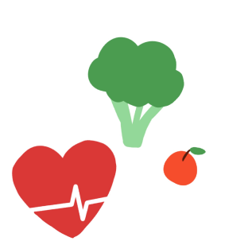

편한한끼
Local Food
로컬푸드(Local Food)는 지역에서 생산되고 소비되는 식품을 의미합니다. 이는 생산지와 소비지 간의 거리를 최소화하여 신서하고 안전한 식품을 제공하는 것을 목표로 합니다. 로컬푸드는 다양한 장점과 의미를 지니고 있습니다. 소비자와 생산자 간의 관계를 강화하고, 지속 가능한 농업과 환경을 추구하는 중요한 식문화의 한 부분으로 자리잡고 있습니다.
건강 문제
먼 거리 이동으로 보존 기간을 늘리기 위해 농약, 왁스 등 화학물질 사용합니다.
환경 문제
식재료가 생산, 운송, 소비되는 과정에서 발생하는 환경 부담 정도가 커져요.
경제 문제
생산자와 소비자 간의 기업, 도매업자, 소매업자 등 개입으로 생산자인 농업인들의 수입은 줄고 소비자들이 지불하는 가격은 올라갑니다.
생산자와 소비자 사이의 운송 거리가 짧기에 소비자는 영양과 신선도가 유지된
안전된 먹거리를 공급 받을 수 있습니다
농민들이 직접 직매장에 공급하기 때문에 농부들에게 돌아가는 이익이 많습니다.
생산자와 소비자 사이의 거리가 짧아 온실가스 배출량을 줄여 지구온난화를 예방할 수 있습니다
생산자와 소비자 사이의 거리가 짧아 온실가스 배출량을 줄여 지구온난화를 예방할 수 있습니다
지역 내에서 생산 유통 소비되기 때문에 소비자가 지출한 돈이 외부로 유출하지 않고 지역 내부에서 순환되어 지역 경제 활성에 도움이 됩니다.